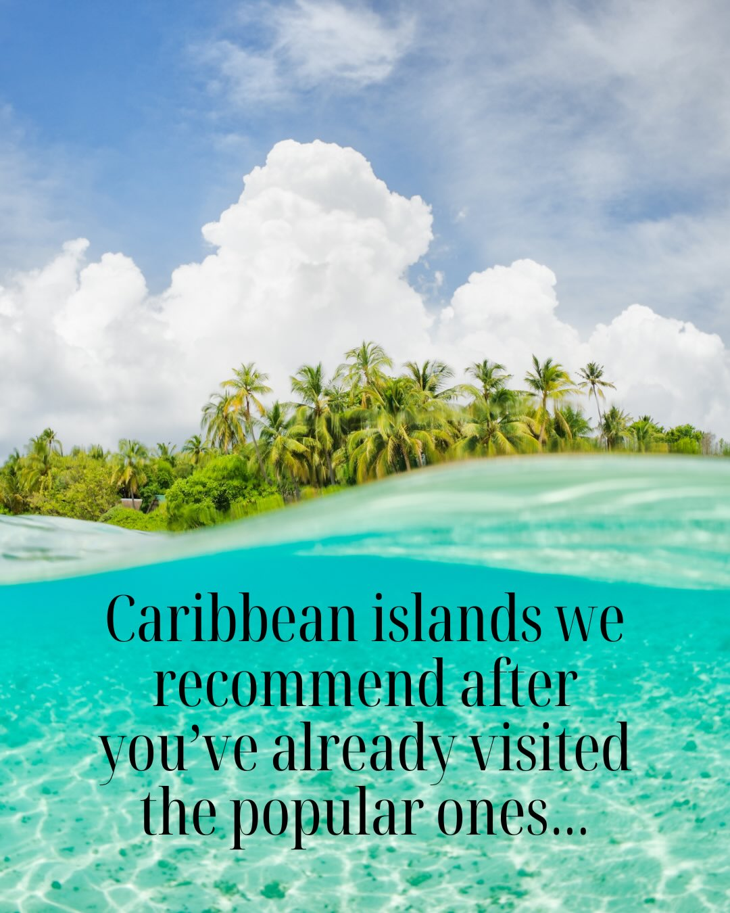
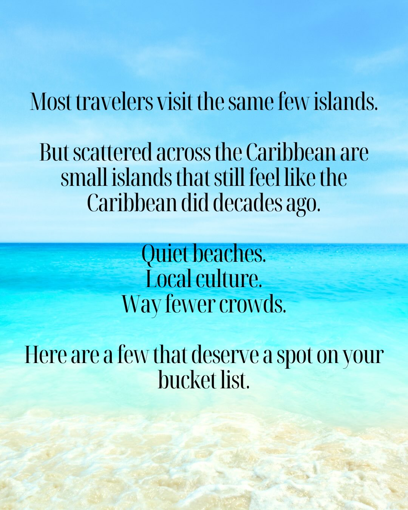
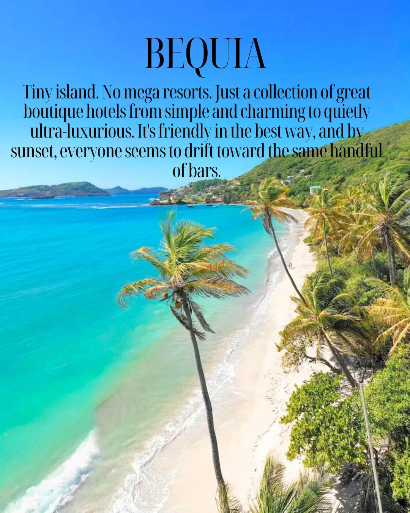
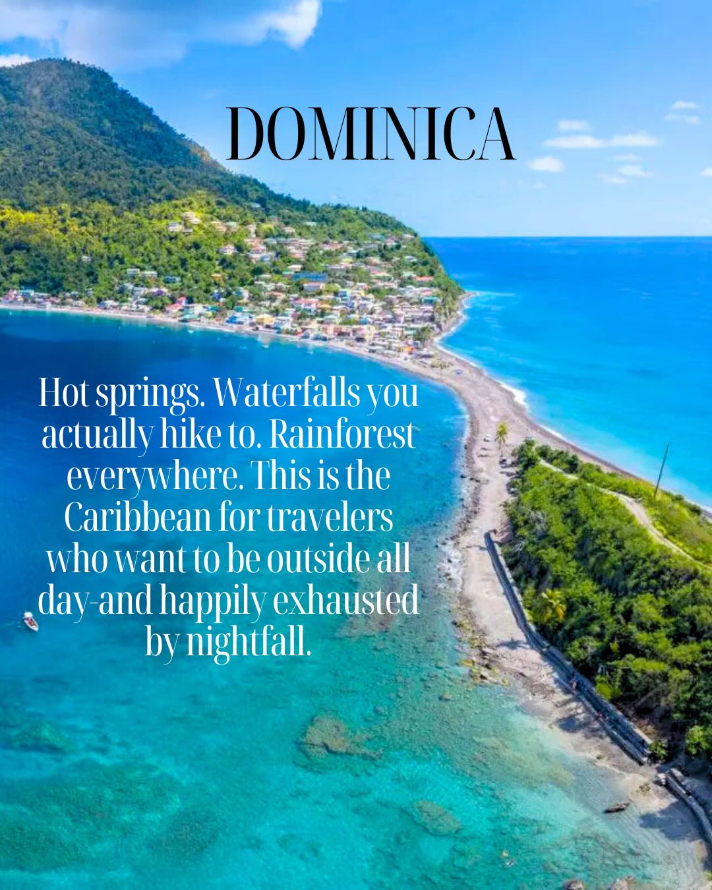
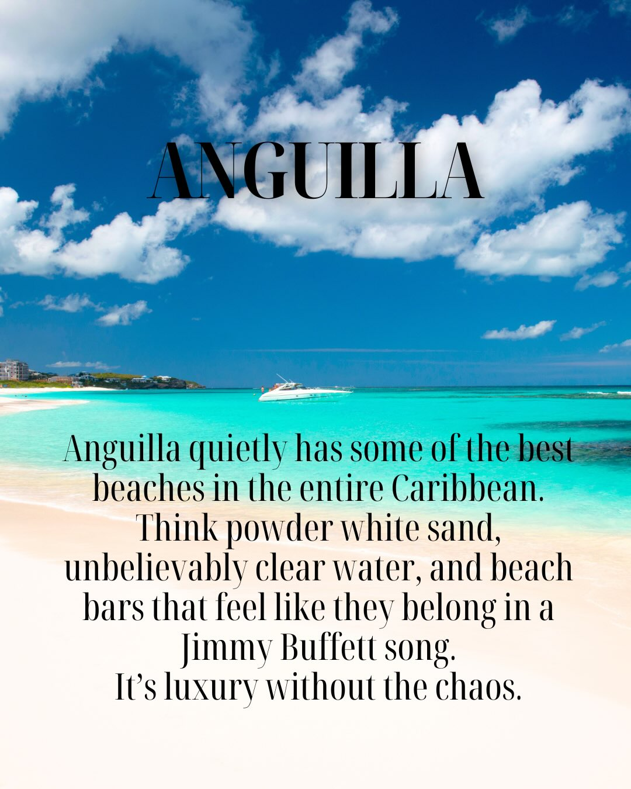
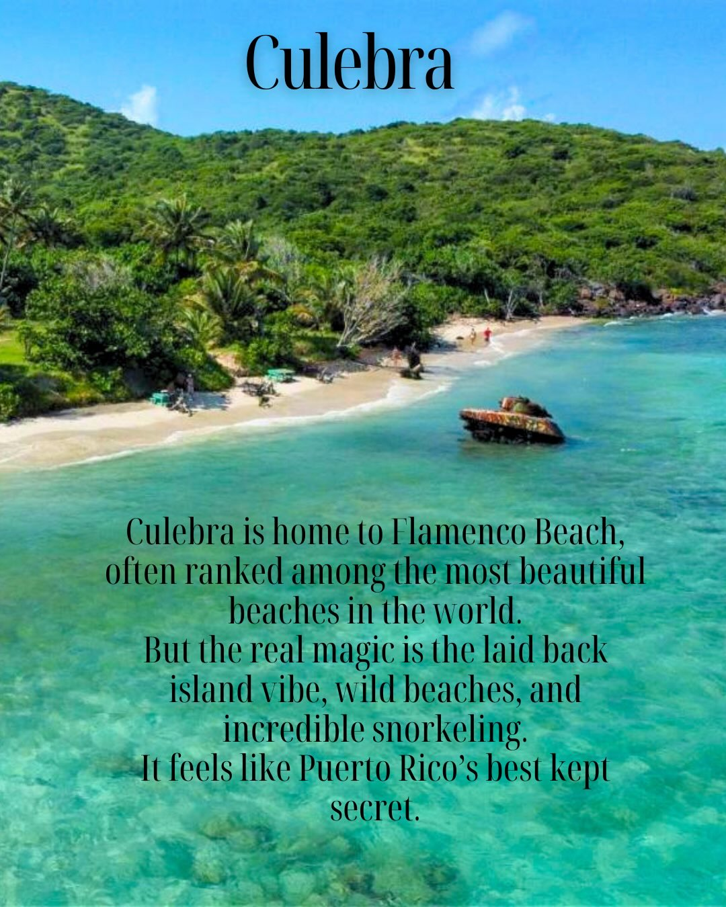
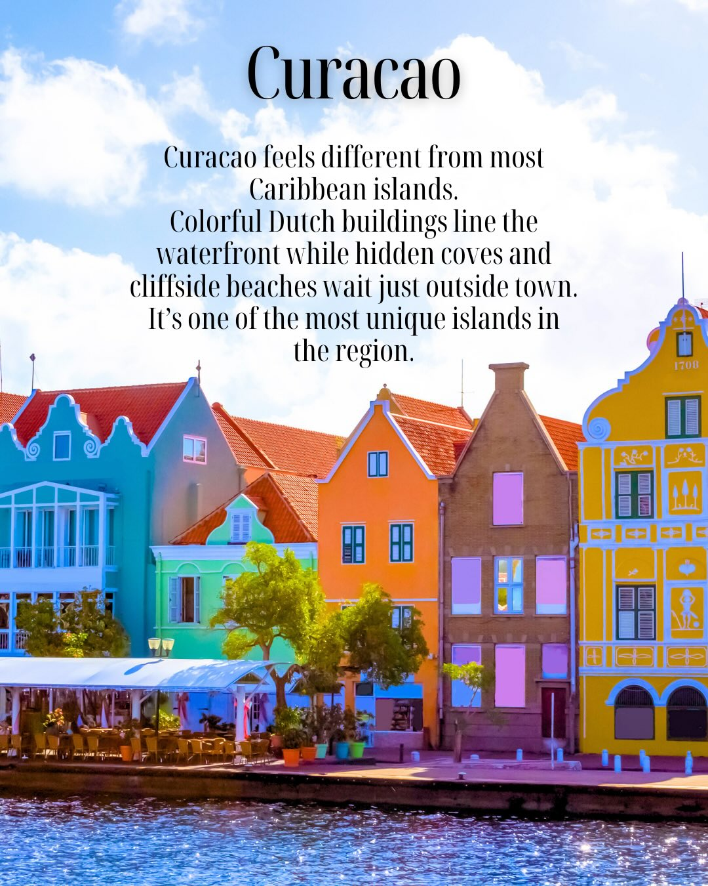
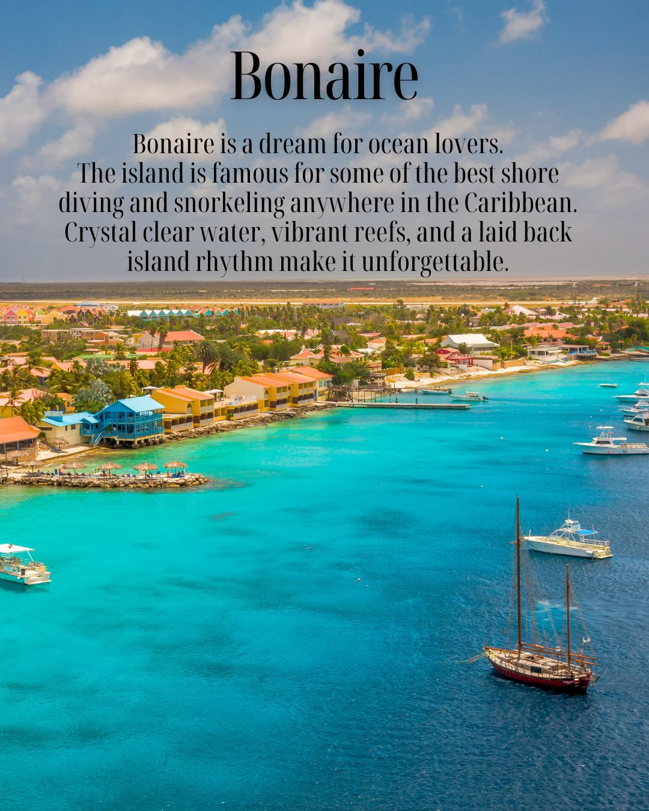
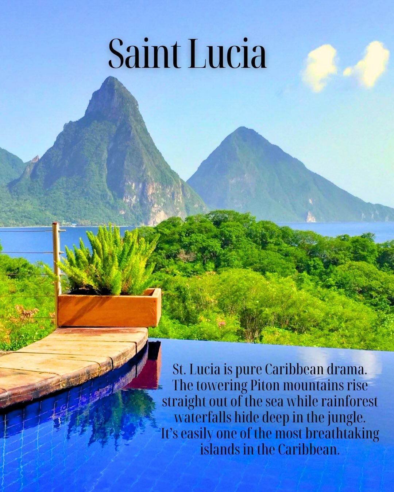

Instagram Post

Aruba, Turks and Caicos, and the Bahamas are...
carousel (10 slides) (enriched by ClaudeClaw)
Summary
Caribbean islands we recommend after you've already visit... | Most travelers visit the same few islands | BEQUIA Tiny island | DOMINICA Hot springs | ANGUILLA Anguilla quietly has some of the best beaches in... | Culebra Culebra is home to Flamenco Beach, often ranked a... | Curacao Curacao feels different from most Caribbean islands | Bonaire Bonaire is a dream for ocean lovers | Saint Lucia ...
Caption
Aruba, Turks and Caicos, and the Bahamas are popular for a reason. We love them too and go back often.
But one of the best parts about traveling in the Caribbean is discovering islands that fly a little more under the radar.
Places like Bequia, where colorful fishing boats line the harbor and life moves at an easy island pace.
Or Dominica, known as the Nature Island, filled with rainforest hikes and waterfalls.
Anguilla is home to some of the most beautiful beaches in the Caribbean.
Culebra has Flamenco Beach and incredible snorkeling.
Curacao mixes colorful streets with hidden coves and cliffside beaches.
Bonaire is a dream for divers and ocean lovers.
And Saint Lucia might have the most dramatic scenery anywhere in the Caribbean.
The well known islands will always be classics. But sometimes the fun part is discovering somewhere new.
Which one would you add to your list first?
Save this post for when you start planning your next island trip.
#caribbeantravel #islanddestinations #tropicalvacation #caribbeanislands #beachtravel 🌴
1
Caribbean islands we recommend after you've already visited the popular ones...
The image shows a split view of a tropical scene, with a lush island covered in palm trees under a blue sky with clouds above the water, and clear turquoise ocean water below.
2
Most travelers visit the same few islands. But scattered across the Caribbean are small islands that still feel like the Caribbean did decades ago. Quiet beaches. Local culture. Way fewer crowds. Here are a few that deserve a spot on your bucket list.
The image displays a serene tropical beach scene with a clear blue sky, a turquoise ocean, and gentle white waves washing onto a sandy shore.
3
BEQUIA Tiny island. No mega resorts. Just a collection of great boutique hotels from simple and charming to quietly ultra-luxurious. It's friendly in the best way, and by sunset, everyone seems to drift toward the same handful of bars.
An aerial view shows a tropical beach with turquoise water, white sand, and numerous palm trees, with a lush green hillside and some buildings in the background.
4
DOMINICA Hot springs. Waterfalls you actually hike to. Rainforest everywhere. This is the Caribbean for travelers who want to be outside all day-and happily exhausted by nightfall.
An aerial view shows a lush green mountain sloping down to a coastal town with colorful buildings, a long narrow beach, and clear blue ocean under a bright sky.
5
ANGUILLA Anguilla quietly has some of the best beaches in the entire Caribbean. Think powder white sand, unbelievably clear water, and beach bars that feel like they belong in a Jimmy Buffett song. It's luxury without the chaos.
A tropical beach scene features a bright blue sky with white clouds, turquoise ocean water, a white sand beach, and a white boat floating in the water, with distant buildings visible on the coastline.
6
Culebra Culebra is home to Flamenco Beach, often ranked among the most beautiful beaches in the world. But the real magic is the laid back island vibe, wild beaches, and incredible snorkeling. It feels like Puerto Rico's best kept secret.
A tropical beach with clear turquoise water, a sandy shore, and a lush green hill covered in trees, featuring a partially submerged rusty tank in the water.
7
Curacao Curacao feels different from most Caribbean islands. Colorful Dutch buildings line the waterfront while hidden coves and cliffside beaches wait just outside town. It's one of the most unique islands in the region. 1760
A vibrant waterfront scene features a row of colorful Dutch-style buildings under a blue sky with white clouds, with a body of water in the foreground and an outdoor dining area visible.
8
Bonaire Bonaire is a dream for ocean lovers. The island is famous for some of the best shore diving and snorkeling anywhere in the Caribbean. Crystal clear water, vibrant reefs, and a laid back island rhythm make it unforgettable.
An aerial view shows a colorful coastal town with buildings lining a vibrant turquoise ocean where several boats are anchored under a blue sky with white clouds.
9
Saint Lucia St. Lucia is pure Caribbean drama. The towering Piton mountains rise straight out of the sea while rainforest waterfalls hide deep in the jungle. It's easily one of the most breathtaking islands in the Caribbean.
An infinity pool with a wooden deck and a potted plant in the foreground overlooks a tropical sea with two large, lush green mountains (the Pitons) under a clear blue sky.
10
SAVE & FOLLOW @thesaltlifefamily Check our website at www.thesaltlifefamily.com for more travel content, travel tips, and travel guides.
Four people are sitting in colorful Adirondack chairs on a sandy beach, facing the ocean with their arms raised, under a clear blue sky.
All slides







